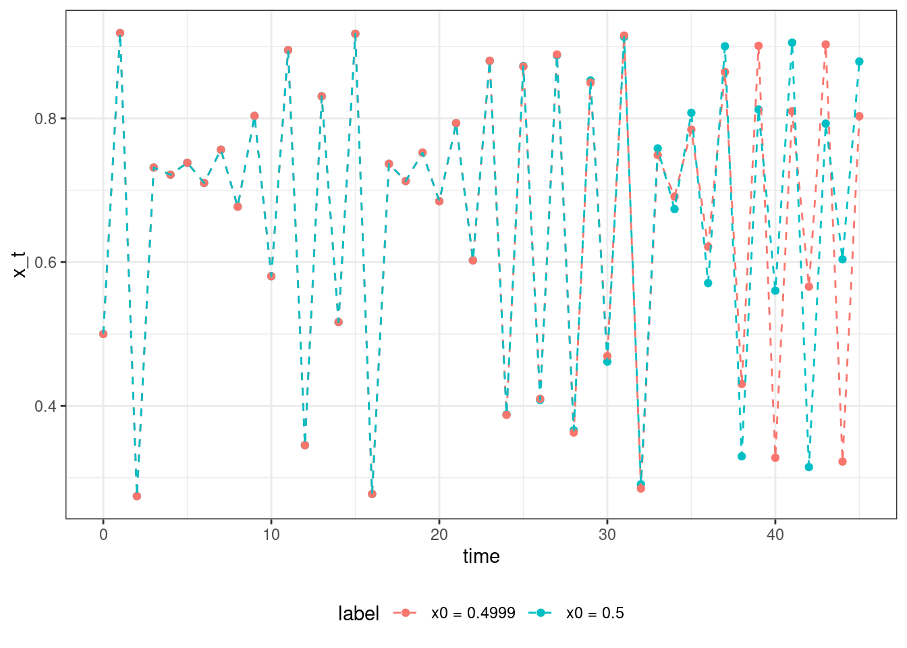
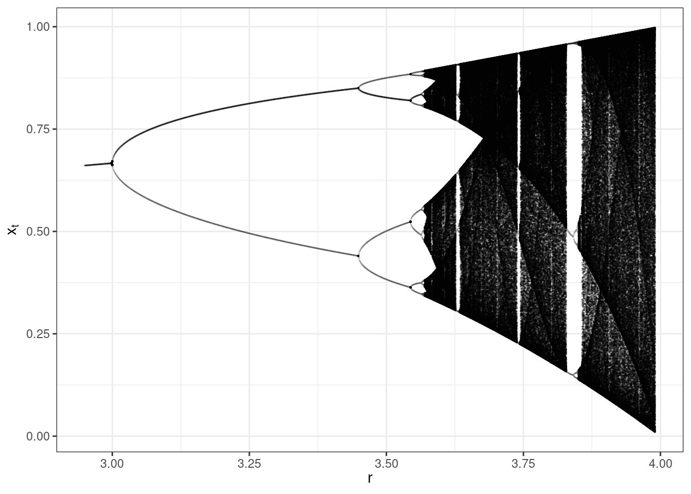

exponential_growth <- function(t, x, parms){
dxdt <- x * parms$rho
return(list(dxdt))
}Models for a single population
A simple model for non-overlapping generations
Consider a population reproducing annually, with non-overlapping generations. Over its lifetime, each individual produces \(\rho\) offspring, which form the next generation. Then, we can write:
\[ x_{k+1} = \rho x_k \]
where \(x_k\) is the number of individuals/area at generation \(k\). Naturally, we can iterate again, and find the population density at time \(x_{k+2}\):
\[ x_{k+2} = \rho x_{k+1} = \rho^2 x_{k} \]
and in general:
\[ x_{n} = \rho^n x_0 \]
where \(x_0\) is the initial population size, and \(n\) is the number of generations since we started tracking the population. We assume \(x_0>0\), and thus the population grows whenever \(\rho > 1\), declines whenever \(\rho < 1\), and is constant whenever \(\rho = 1\). Armed with \(x_0\) and \(\rho\), we can project the population forward in time for an arbitrary number of generations.
Overlapping generations: exponential growth
Take the population density at time \(t\) and \(t + \Delta t\); in the time interval \(\Delta t\) the change in population density is \(x(t + \Delta t) - x(t)\), and the average change per unit of time is \((x(t + \Delta t) - x(t))/\Delta t\). We can consider the limit in which the interval \(\Delta t\) shrinks to zero:
\[ \lim_{\Delta t \to 0} \dfrac{x(t + \Delta t) - x(t)}{\Delta t} = \frac{dx(t)}{dt} \]
In fact, this is exactly the definition of the derivative with respect to (w.r.t.) time of the function \(x(t)\). A great contribution of Newton and Leibniz was to recognize that many natural phenomena can be described by simple differential equations—even though the equations describing the rate of change \(dx(t)/dt\) are simple, the behavior of the solutions \(x(t)\) can be incredibly complex.
In ecology and evolutionary biology, one encounters two main types of differential equations:
Ordinary differential equations (ODEs) describe the rate of change of a quantity (in our case, population densities, \(x(t)\)) as a function of an independent variable (in our case, the time \(t\)), and can contain functions of the quantity, and its derivatives. If only the first derivative (\(dx(t)/dt\)) is included, it is called a first-order ODE.
Partial differential equations (PDEs) contain more than one independent variable (e.g., time and coordinates in space). Therefore, the quantity of interest is a multivariate function, such as \(q(x,y,t)\), denoting the density of a population at the coordinates \(x,y\) and time \(t\). The partial derivatives with respect to the independent variables are considered, hence the name.
Many other types of differential equations (stochastic differential equations, SDEs; integro-differential equations, IDEs; etc.) are found in certain technical areas.
In this class, we will deal exclusively with ODEs of the form:
\[ \dfrac{dx(t)}{dt} = f(x(t)) \]
where the function \(f(x(t))\) models different ecological phenomena influencing the growth and decline of populations. For example, take populations growing thanks to the per-capita birth rate \(\beta\), and declining due to the death rate \(\delta\):
\[ \dfrac{dx(t)}{dt} = \beta x(t) - \delta x(t) = (\beta - \delta) x(t) = \rho\, x(t) \]
here the intrinsic growth rate \(\rho\) represents the difference between birth and death rates. The parameter is taken to be independent of time, yielding an autonomous differential equation. An ODE is autonomous if it does not depend explicitly on the independent variable (in our case, time). I.e., if \(dx/dt = f(x(t))\) the system is autonomous, while \(dx/dt = g(x(t),t)\) is not.
Separation of variables
A differential equation for \(x(t)\) is called separable, if it can be written as:
\[ \frac{dx(t)}{dt} = g(t)\, h(x(t)) \]
where \(g(t)\) is a function of \(t\), and \(h(x(t))\) a function of \(x(t)\). As long as \(h(x(t)) \neq 0\), we can formally write:
\[ \frac{1}{h(x(t))} dx(t) = g(t)\, dt \]
We can now integrate both sides, obtaining
\[ \begin{aligned} \int \frac{1}{h(x(t))} dx(t) + \mathcal c_1 &= \int g(t)\, dt + \mathcal c_2\\ \int \frac{1}{h(x(t))} dx(t) &= \int g(t)\, dt + \mathcal c \end{aligned} \]
where \(\mathcal c_1, \mathcal c_2\) and \(\mathcal c = \mathcal c_2 - \mathcal c_1\) are constants of integration, whose value can be set by considering the initial conditions.
Example
Consider:
\[ \frac{dx(t)}{dt} = \alpha \]
with initial condition \(x(0) = x_0\). Separate the variables and integrate:
\[ \begin{aligned} d x(t) &= \alpha\, dt\\ \int d x(t) &= \alpha \int dt + \mathcal c\\ x(t) &= \alpha t + \mathcal c \end{aligned} \]
Now substitute the initial condition:
\[ x(0) = x_0 = \alpha 0 + c = c \]
Yielding the solution:
\[ x(t) = x_0 + \alpha t \]
A solution of an initial-value problem is an equation which, given the values of the parameters (\(\alpha\), in this case) and the initial conditions (\(x_0\), in this case), allows us to determine the value of the dependent variable (\(x(t)\)) for any value of the independent variable (\(t\)). Only relatively simple ODEs or systems of ODEs can be solved explicitly.
We can solve the differential equation:
\[ \begin{aligned} \dfrac{dx}{dt} &= \rho\, x\\ \dfrac{1}{x}\,dx &= \rho\, dt \end{aligned} \]
Integrate both sides
\[ \begin{aligned} \int \dfrac{1}{x}\,dx &= \int \rho\, dt\\ \log x &= \rho\, t + \mathcal c\\ x &= e^{\rho\, t + \mathcal c}\\ x &= e^{\rho\, t} e^\mathcal c\\ \end{aligned} \]
where \(\mathcal c\) is a constant of integration. Then, we can plug in the initial condition: at \(t=0\), the population is at density \(x_0\):
\[ \begin{aligned} x_0 &= e^{\rho\, 0}e^{\mathcal c}\\ x_0 &= e^\mathcal c \end{aligned} \]
We obtain the solution:
\[ x(t) = x(0) e^{\rho\, t} \]
Integrating differential equations numerically
You can compute \(x(t)\) for any differential equation (or system of differential equations) in R using numerical techniques. Your code needs to include two parts:
First, we write a function defining the (system of) ODE(s). This function takes three arguments: t, the time, x, the state of the system, and parms, a list of parameters, and returns a list containing \(dx/dt\). For the exponential growth, we can write:
Because ecological models only make sense for positive population densities, we can set an arbitrarily small threshold, and consider the population extinct if it falls below the threshold:
THRESH <- 10^-10
exponential_growth <- function(t, x, parms){
if(x < THRESH) x <- 0
dxdt <- x * parms$rho
return(list(dxdt))
}The second part of the code invokes the numerical integration function ode. For this function, we need to set a) initial conditions, b) determine at which times do we want to observe the state of the population, c) specify the name of the function to use, d) the parameters to use, and e) (optional) specify the method to use for the integration. The function ode is part of the package deSolve:
x0 <- 1 # initial conditions
my_time <- seq(0, 5, by = 0.1) # we will observe the system at these times
parms <- list(rho = 1.05) # list of parameters
output <- ode(y = x0, # a) initial conditions
times = my_time, # b) time at which we observe the system
func = exponential_growth, # c) function computing r.h.s. of ODEs
parms = parms, # d) parameters of ODEs
method = "ode45") # e) more on this later; this is a good general-purpose choiceThe output is a matrix of class deSolve, containing the time in the first column, and the values of \(x(t)\) in the second. For plotting, it is best to convert this into a data frame:
output %>%
as.data.frame() %>%
ggplot() + aes(x = time, y = `1`) +
geom_point() +
geom_line() +
xlab("t") +
ylab(expression(x(t))) +
theme_bw()
Doubling time
How long will it take for a growing population (\(\rho > 0\)) to double in density? We are looking for \(\tau\) such that \[ \begin{aligned} x(\tau) &= 2 x_0\\ x_0 e^{\rho \tau} &= 2 x_0\\ e^{\rho \tau} &= 2\\ \rho \tau &= \log 2\\ \tau &= \dfrac{\log 2}{\rho} \end{aligned} \]
Thus, the doubling time does not depend on the initial condition: the population will keep doubling every \(\log 2 / \rho\) units of time. For example, take \(\rho = 0.01\), then \(\tau \approx 30\): a population growing exponentially with rate of 1% per year will double every 30 years or so. Then, a growth of 3% doubles every 10 years, etc.
Exercise: Radiocarbon dating
While at the University of Chicago, Willard Libby (Nobel Laureate in Chemistry, 1960) pioneered radiocarbon dating. The carbon isotope \({}^{14}\)C is constantly being created in the Earth’s atmosphere by the interaction of cosmic rays with atmospheric nitrogen. The carbon combines with oxygen, to form CO\({}_2\) that is then absorbed by plants. When plants die, the isotope decays in their tissues. Radioactive decay follows the exponential model:
\[ N(t) = e^{\lambda t} N(0) \]
where \(\lambda < 0\) is the decay rate of the isotope. The half-life of a radioisotope is the time it takes to be reduced to half of the original concentration, and is 5,730 years for \({}^{14}\)C.
- Find the value of \(\lambda\) for \({}^{14}\)C given its half-life
- Express \(t\) as a function of \(\lambda\), and the ratio between \(N(t)\) and \(N(0)\)
- The concentration in the atmosphere is about 1 atom of \({}^{14}\)C for every \(10^{12}\) atoms of carbon. You have a collected sample that contains \(1/16\) atoms of \({}^{14}\)C for every \(10^{12}\) atoms of carbon; date the sample.
Logistic growth
We have a population that grows exponentially when at very low densities, but experiences a slow down in growth when densities are higher. The logistic growth equation is typically written as:
\[ \frac{d X}{d \tau} = X\left(\rho - \alpha X\right) \]
where \(\rho>0\) is the intrinsic growth rate of the population, and \(\alpha>0\) is a parameter that regulates the amount by which growth is decreased as \(X\) increases.
An equilibrium (steady-state, fixed point) of a differential equation is a value of the dependent variable (\(X(t)\)) that makes the right-hand side of the equation zero. We denote an equilibrium as \(X^\star\). We can write:
\[ \left.\dfrac{dX}{d\tau}\right|_{X^\star} = 0 \]
i.e., the differential equation, evaluated at the point \(X^\star\) is zero: the population will not grow nor decline, but rather will remain at \(X^\star\). The logistic equation has two equilibria: \(X^\star=0\) (absence of the population), and \(\rho = \alpha X^\star\), \(X^\star = \rho / \alpha = \kappa\), called the carrying capacity of the population.
Chain rule
This is one of the most useful formulas from calculus. It relates the derivative of the composition of two differentiable functions with the derivatives of the functions. If \(h(x) = g(u)\) and \(u = f(x)\), then:
\[ \dfrac{dh}{dx} = \dfrac{dg}{du}\dfrac{du}{dx} \]
As put by George Simmons [Calculus with Analytic Geometry (1985)]: If a car travels twice as fast as a bicycle and the bicycle is four times as fast as a walking man, then the car travels 2 × 4 = 8 times as fast as the man.
Example
Take
\[ \dfrac{dx(t)}{dt} = x(t) f(x(t)) \]
and write the ODE describing \(d \log x(t) /dt\). We can write this function as the derivative of the composition \(\log x(t) = \log u\) and \(u = x(t)\). Then, by chain rule:
\[ \begin{aligned} \dfrac{d \log x(t)}{dt} &= \dfrac{d \log u}{du} \dfrac{du}{dt}\\ &= \dfrac{1}{u} \dfrac{du}{dt}\\ &= \dfrac{1}{x(t)} \dfrac{d x(t)}{dt}\\ &= \dfrac{1}{x(t)} x(t) f(x(t))\\ &= f(x(t)) \end{aligned} \]
showing that the per-capita rate of change:
\[ \dfrac{1}{x(t)} \dfrac{dx(t)}{dt} = \dfrac{\log x(t)}{dt} \]
is the derivative in time of the logarithm of the density of the population.
We can simplify the analysis of the differential equation by rescaling all the variables by positive quantities, thus obtaining a simpler form that retains the behavior of the original equation.
Nondimensionalization
Ecological models can have many parameters, and the goal of nondimensionalization is to rewrite the equations using as few parameters as possible, via a change of variables. Importantly, the new system and the original one are equivalent, and share the same dynamics. In fact, the trajectories of the original system can be reconstructed from those of the simpler system by inverting the transformation.
To perform nondimensionalization:
- identify all the variables that depend on time (\(X(\tau)\), \(Y(\tau)\), etc.), as well as the independent variable (the time, \(\tau\))
- replace each of them by a scaled version: \(X = c_x x\), \(Y = c_y y\), \(t = c_t \tau\), in which \(c_i\) are positive constants to be determined, and rewrite the equations for the new variables
- choose the values for the constants to eliminate as many parameters as possible. Generally, one should be able to remove one parameter for each dependent variable, plus one parameter by scaling the time.
Example
The exponential growth equation has a single parameter:
\[ \frac{dx}{d\tau} = \rho x \]
one can define \(t = c_1 \tau\), obtaining:
\[ \begin{aligned} \frac{1}{c_1}\frac{dx}{dt} &= \rho x\\ \frac{dx}{dt} &= c_1 \rho x\\ \frac{dx}{dt} &= x \end{aligned} \]
where we have chosen \(c_1 = 1/\rho\).
We rewrite the equation for the logistic growth by choosing \(x = c_1 X\) and \(t = c_2 \tau\). Our equations become (use the chain rule):
\[ \begin{aligned} \dfrac{c_1}{c_2}\dfrac{dx}{dt} &= c_1 x (\rho - \alpha c_1 x)\\ \dfrac{dx}{dt} &= x (\rho c_2 - \alpha c_1 c_2 x)\\ \end{aligned} \]
We choose \(c_2 = 1/\rho\) to make the first coefficient in parenthesis be equal to 1; then, we choose \(c_1 = \rho/\alpha\) to make the second coefficient be 1:
\[ \dfrac{dx}{dt} = x (1 - x) \]
Note that, in practice, we have chosen to rescale the variables using the intrinsic growth rate, \(t = \tau / \rho\), and the carrying capacity, \(x = X \alpha / \rho = X / \kappa\).
The logistic equation can be solved, because it is separable:
\[ \begin{aligned} \dfrac{1}{x(1-x)} dx &= dt\\ \left(\dfrac{1}{x}-\dfrac{1}{x-1}\right)dx &= dt\\ \int \dfrac{1}{x} dx - \int \dfrac{1}{1-x} dx &= \int dt + \mathcal c\\ \log x - \log(x-1)&= t + c\\ \log \dfrac{x}{x-1}&= t + c\\ \dfrac{x}{x-1} &= e^t e^c\\ x &= \dfrac{e^t e^c}{e^t e^c - 1}\\ x &= \dfrac{1}{1 - e^{-t}e^{-c}} \end{aligned} \]
Plugging in \(x_0\) when \(t=0\), we find the value for the constant of proportionality:
\[ \begin{aligned} x_0 &= \frac{e^c}{e^c - 1}\\ e^c &= \frac{x_0}{x_0 - 1} \end{aligned} \]
Yielding the solution
\[ x(t) = \dfrac{x_0 e^t}{1 + (e^t - 1)x_0} \]
Qualitative analysis
As shown for the logistic growth, solving ODEs can be very hard, and for most equations found in ecology a closed-form solution cannot be found. Moreover, even when we can solve the equations, the solution might be difficult to interpret or overly complex. Important information on the behavior of the system can be found by performing a qualitative analysis of the system. Here we concentrate on the location of equilibria, and their stability.
A graphical method
For any first-order ODE with a single dependent variable, one can understand the behavior of the system by simply plotting \(dx(t)/dt\) (y-axis) vs \(x(t)\) (x-axis). For example, for the logistic model:
\[ \dfrac{dx}{dt} = x(1-x) \]
Showing that there are two equilibria (\(x^\star =0\), and \(x^\star = 1\)), corresponding to the points where the curve \(dx/dt\) intercepts the x-axis. The function \(dx/dt\) is positive whenever \(0<x<1\), and is negative when \(x>1\). Thus, the population will grow in time when \(0<x<1\), eventually reaching \(x^\star = 1\); similarly, if we start the population at a density that is larger than the equilibrium, it will decline, again eventually reaching \(x^\star = 1\). We therefore say that \(x^\star = 1\) is asymptotically stable.
Asymptotic stability
There are two useful notions of equilibrium stability for dynamical systems. We state them informally; you can find a more rigorous definition in any book on dynamical systems.
Lyapunov stability For a given dynamical system \(dx(t)/dt\), \(x^\star\) is Lyapunov stable if trajectories starting close to \(x^\star\) remain close to it, indefinitely. More formally, we define a neighborhood of \(x^\star\), \(\| x(0) - x^\star\| < \delta\); then \(x^\star\) is Lyapunov stable if \(\| x(t) - x^\star\| < \epsilon\) for every \(t\), where \(\epsilon > 0\).
Asymptotic stability An equilibrium is asymptotically stable if it is Lyapunov stable, and trajectories eventually converge to \(x^\star\): \(x^\star\) is asymptotically stable if there exist a neighborhood \(\| x(0) - x^\star\| < \delta\) such that \(\lim_{t\to\infty}\| x(t) - x^\star\| = 0\).
The logistic model assumes that the per capita growth rate is higher at low densities. This assumption may not be realistic for all species: when the density is low, for example, it can be more difficult to find a partner and defend against predators. This phenomenon of lower per capita growth rates at low densities, and higher per capita growth at high densities—which can also be called positive density-dependence—is known as the Allee effect. It is named after Warder Clyde Allee (1885-1955), who received his PhD from the University of Chicago and was later a professor and chair of Zoology. We could model this effect with the following equation:
\[ \dfrac{dX}{dt} = X\left(\dfrac{u X}{v + X} - c X \right) = X^2 \left(\dfrac{u}{v + X} - c \right) \]
where \(c\) is the density-dependent death rate. Assume that all parameters are positive; then, besides the trivial equilibrium \(X^\star =0\), we have a positive equilibrium \(X^\star = \frac{u}{c} - v > 0\).
The graphical method allows to classify all equilibria according to their stability in a straightforward manner. Here’s an example with many equilibria:
Exercise: Strong Allee effect
A stronger version of the Allee effect can be modeled as:
\[ \dfrac{dX}{dt} = X (X - \gamma)(\kappa - X) \]
with \(0<\gamma < \kappa\).
- Interpret the parameters
- Plot \(dX/dt\) vs \(X\), and identify all equilibria
- Classify the equilibria according to their stability
Local asymptotic stability
You might have noticed that, when performing the graphical analysis above, and equilibrium is stable if \(dx/dt\) has a negative slope at \(x^\star\). Here we formalize this notion, by considering small perturbations of the system resting at an equilibrium.
- Take an ODE \(dx/dt = f(x)\)
- The system is resting at an equilibrium \(x^\star\)
- We perturb the system, and track the dynamics when starting at \(x(0) = x^\star + \epsilon\), where \(\epsilon\) (the perturbation) is taken to be sufficiently small \(\| \epsilon \| \ll 1\)
- We write \(\Delta x(0) = x(0) - x^\star\)
- We derive the dynamics for \(\Delta x\):
By chain rule,
\[ \begin{aligned} \dfrac{d \Delta x}{dt} &= \dfrac{d \Delta x}{dx} \dfrac{d x}{dt} \\ &= 1 \dfrac{d x}{dt}\\ &= f(x)\\ &= f(\Delta x + x^\star) \end{aligned} \] Where we have substituted \(x = \Delta x + x^\star\).
- Now we approximate the function \(f(\Delta x + x^\star)\) by Talyor expanding.
Taylor series
We can approximate the behavior of a (infinitely differentiable) function in the vicinity of a point \(a\) by a power series:
\[ f(x) = f(a) + \dfrac{1}{1!} \left. \dfrac{df(x)}{dx} \right|_a (x-a)+ \dfrac{1}{2!} \left. \dfrac{d^2f(x)}{dx^2} \right|_a (x-a)^2+ \dfrac{1}{3!} \left. \dfrac{d^3f(x)}{dx^3} \right|_a (x-a)^3 + \ldots \] where \(n! = n (n-1)(n-2)\ldots 1\) is the factorial function and the derivatives are evaluated at \(a\). When we choose \(a=0\) this is called the Maclaurin series.
Example
Expand \(e^x\) around \(0\):
\[ \begin{aligned} e^x &= e^0 + \left. e^x\right|_0 x + \frac{1}{2}\left. e^x\right|_0 x^2 + \frac{1}{6}\left. e^x\right|_0 x^3 + \ldots\\ &=1 + x + \frac{1}{2} x^2 + \frac{1}{6}x^3 + \ldots\\ &=\sum_{k=0}^\infty \frac{x^k}{k!} \end{aligned} \]
We want to Taylor-expand \(f(x) = f(\Delta x + x^\star)\) around \(x^\star\):
\[ f(x) = f(x^\star) + \left.\dfrac{d f(x)}{d x}\right|_{x^\star} (x - x^\star) + \dfrac{1}{2}\left.\dfrac{d^2 f(x)}{d x^2}\right|_{x^\star} (x - x^\star)^2 + \ldots \] Note that \(f(x^\star) = 0\) by the definition of an equilibrium. If the deviation is small, we can neglect all the higher-order terms, obtaining:
\[ \dfrac{d \Delta x}{dt} = f(x) \approx \left.\dfrac{d f(x)}{d x}\right|_{x^\star} \Delta x \]
which is the equation of the exponential growth model, with \(\rho = \left.\dfrac{d f(x)}{d x}\right|_{x^\star}\). Then, the solution is \(\Delta x(t) = \Delta x(0) e^{\rho t}\), and the deviation from the equilibrium goes to zero (i.e., the system goes back to \(x^\star\)) whenever \(\rho < 0\).
For example, take the logistic growth model and evaluate the stability of \(x^\star = 1\); we have:
\[ \left.\dfrac{d f(x)}{d x}\right|_{x^\star} = \left.\dfrac{d (x - x^2)}{d x}\right|_{x^\star} = \left.(1 - 2x)\right|_{x^\star} = -1 \]
and thus the equilibrium is locally asymptotically stable. Locally, because we have considered very small deviations from the equilibrium, and asymptotic because convergence only happens eventually.
Exercise: Stability of equilibria for strong Allee effect
Take the function for the Allee effect in the previous exercise:
\[ \dfrac{dX}{dt} = X (X - \gamma)(\kappa - X) \]
Use local stability analysis to show that the system has three equilibria, of which two are locally stable.
Exercise: Stability of model with weak Allee effect
Now analyze the stability of the model with weak Allee effects:
\[ \dfrac{dX}{dt} = X^2 \left(\dfrac{u}{v + X} - c \right) \]
Assuming that \(u/c > v\). You will find that the analysis of the equilibrium \(X^\star = 0\) is inconclusive; expand the function \(d\Delta X/dt\) to include higher-order terms to determine the stability of the equilibrium.
Exercise: Levins’ metapopulation model
In 1969, when he was a professor at the University of Chicago, Richard Levins proposed a model for metapopulation dynamics. The idea is that in a landscape there are numerous patches of suitable habitat that can be colonized by a given species. Each population in a patch undergoes extinction with a certain rate, and can colonize other patches by sending propagules to them. Because there are many patches, we track the proportion of occupied patches \(0 \leq p(t) \leq 1\); the proportion of empty patches is therefore \(1 - p(t)\). If individuals disperse to a random patch when leaving an occupied patch, the rate of colonization will be proportional to the product \(\gamma\, p(t)(1-p(t))\) (i.e., \(\gamma\, p(t)\) is the rate at which propagules are produced, and \(1-p(t)\) is the rate at which they land on an empty patch). The rate at which patches are vacated, the extinction rate, is \(\delta\). The model can be written as:
\[ \dfrac{d p(t)}{dt} = \gamma\,p(t)(1 - p(t)) - \delta\, p(t) \]
- Find the equilibria
- Determine their stability
- Show that the equation is equivalent to that for the logitstic growth
Global Asymptotic Stability
In certain models, we can show that whenever the population starts at a positive value, it will always reach a certain equilibrium \(x^\star\). In this case, we say the equilibrium is globally asymptotically stable.
Because as we said solving differential equations is in general very difficult, and in many cases of interest impossible, we employ a proxy function, called a Lyapunov function.
Lyapunov functions
We want to prove that all trajectories originating at \(x(0) > 0\) eventually converge to \(x^\star\). If we can find a function \(V\) such that:
- \(V(x(t)) \geq 0\) for all \(x(t) > 0\)
- \(V(x(t)) = 0\) if and only if \(x(t) = x^\star\)
- \(\dfrac{d V(x(t))}{dt} \leq 0\) for all \(t\) and
- \(\dfrac{d V(x(t))}{dt} = 0\) if and only if \(x(t) = x^\star\)
then \(x^\star\) is globally asymptotically stable: all trajectories starting at a positive point will converge to it.
The logic of this procedure is to identify a suitable function \(V\) that is positive everywhere but at the equilibrium, and is constantly declining in time; then necessarily the function will eventually reach zero, which is attained only at equilibrium.
Example
\(V(x(t)) = (x(t) - x^\star)^2\) is a Lyapunov function that can be used to prove that the logistic growth model \(dx/dt = x(1-x)\) has an equilibrium \(x^\star = 1\) that is globally asymptotically stable.
- \(V(x(t))\) is always nonnegative, and is zero only at \(x(t) = x^\star = 1\)
- The derivative of \(V(x(t))\) w.r.t. time is:
\[ \begin{aligned} \dfrac{dV(t)}{dt} &= \dfrac{dV(t)}{dx(t)}\dfrac{dx(t)}{dt}\\ &= 2(x(t) - x^\star)\dfrac{dx(t)}{dt}\\ &=2(x(t)-1) x(t)(x(t)-1)\\ &=2 x(t) (x(t)-1)^2 \geq 0 \end{aligned} \]
Exercise: Global stability of logistic growth
Show that \(V(x(t)) = x(t) - 1 - \log x(t)\) is a Lyapunov function that can be used to prove the global stability of \(x^\star = 1\) for the logistic growth model \(dx/dt = x(1-x)\).
- Prove that \(V \geq 0\), with equality only at equilibrium
- Prove that \(dV/dt \leq 0\), with equality only at equilibrium
Long-term behavior
Autonomous, first-order ODE models with a single variable can have only two types of behavior: a) \(x(t)\) eventually reaches a fixed point and remains there; b) \(x(t)\) goes to \(\pm \infty\). This is a consequence of an important mathematical fact: if \(dx(t)/dt = f(x(t))\) and the function \(f(x(t))\) is “smooth” (e.g., continuously differentiable) then the solution for the ODE exists and is unique. This means that the equation can cross each point \(x(t) = \alpha\) only once, or infinitely many times. In contrast, discrete models with a single variable can have very interesting behavior.
Discrete-time models
We have so far analyzed models where the growth of a population is described by an ordinary differential equation. However, for particular situations, and especially for species with nonoverlapping generations, a discrete-time approach would be more suitable.
Graphical Methods: Cobwebbing
To understand whether a discrete model is stable, we analyze the plot of \(x_{t+1}\) against \(x_t\), superimposed on the diagonal (\(x_{t+1}=x_{t}\)). We use these two curves to “cobweb”:
Starting from an initial condition \(x_t=x(0)\) (some point on the x-axis), we draw a line to the model’s projection of the population at the next time step (\(x_{t+1}\))
We then set \(x_t=x_{t+1}\) to obtain the population in the next time step. To speed the process along, rather than lifting our pencils to draw \(x_{t+1}\) at \(x_t\) on the x-axis, we can simply draw a horizontal line from \(x_{t+1}\) back to the diagonal (which shows \(x_{t+1}=x_t\)) and then move vertically to get the next \(x_{t+1}\)
With enough iterations, this process reveals whether the population converges to a fixed point or does something more elaborate, and if this trajectory involves oscillations. Note that at a fixed point, \(x_{t+1}=x_t=x^\star\).
We can use this approach for any map (discrete-time model) of \(x_{t+1}\) to \(x_t\), although cobwebbing suffers the disadvantage of requiring a lot of manual labor to explore the asymptotic behavior. To explore its uses further, we’ll consider one of the most basic and important density-dependent, discrete-time models: the logistic map.
The logistic map
This is a model with a very similar formulation to the logistic growth ODE above:
\[ x_{t+1} = r\, x_t (1 - x_t) \]
With \(x_t > 0\) and \(r > 0\). When \(x_t > 1\), the population will decline; therefore it makes sense to start the population at a value \(0<x_0<1\). For these values, the population might grow only if \(r > 1\) (i.e., we want \(x_{t+1} > x_t\) for growth).
Let’s try our hand at cobwebbing: set \(x_0 = 1/2\) and \(r = 3/2\). The cobwebbing plot becomes:
showing that the population declines and then stops at an equilibrium. We can compute the equilibrium by setting \(x_{t+1} = x_t = x^\star\):
\[ \begin{aligned} x^\star &= r\, x^\star (1 - x^\star)\\ 1 &= r\, (1 - x^\star)\\ x^\star &= 1 - \frac{1}{r} \end{aligned} \]
Thus, a feasible (positive) equilibrium is found only for \(r > 1\), as expected. In the example above, the equilibrium is reached without oscillations. Let’s try the cobweb for a larger \(r = 5/2\)
Now the solution \(x^\star = 1 - \frac{2}{5} = \frac{3}{5}\) is reached after oscillating above and below this value.
Stability of equilibria
We want to determine whether \(x^\star\) is stable for a given map (discrete-time model) \(x_{t+1} = f(x_t)\), with \(f(x^\star)=x^\star\). In particular, we want to determine whether when we initialize the system close to \(x^\star\) we converge back to \(x^\star\).
Take \(x_t = x^\star + \epsilon_t\), where \(\epsilon_t\) is small. Then we have
\[ \begin{aligned} x_{t+1} &= f(x_t)\\ x^\star + \epsilon_{t+1} &= f(x^\star + \epsilon_t)\\ x^\star + \epsilon_{t+1} &\approx f(x^\star) + \left. \dfrac{d f(x_t)}{dx_t}\right|_{x^\star} (x_t - x^\star) \\ x^\star + \epsilon_{t+1} &\approx x^\star + \left. \dfrac{d f(x_t)}{dx_t}\right|_{x^\star} \epsilon_t\\ \epsilon_{t+1} &\approx \left. \dfrac{d f(x_t)}{dx_t}\right|_{x^\star} \epsilon_t\\ \end{aligned} \]
which is the very first model we have written. We have:
\[ \epsilon_{t+k} = \rho^{k} \epsilon_t \]
with \(\rho = \left. \dfrac{d f(x_t)}{dx_t}\right|_{x^\star}\). We have that
\[ \lim_{k \to \infty} \epsilon_{t+k} = 0 \quad \text{if} \, |\rho| < 1 \]
Thus, the equilibrium is stable if and only if the absolute value of \(\left. \dfrac{d f(x_t)}{dx_t}\right|_{x^\star}\) is less than 1. If this value is greater than 1, then the equilibrium is unstable: small perturbations will amplify (at least initially); if the value is exactly 1, the analysis is inconclusive, and we might want to consider including higher-order terms in the Taylor expansion above.
Example
Take \(r = 2\), and show that the equilibrium \(x^\star = 1/2\) is stable. We take the derivative:
\[ \rho = \left.\dfrac{d f(x_t)}{d x_t} \right|_{x^\star} = r \left. \dfrac{d (x_t (1- x_t))}{d x_t}\right|_{x^\star} = \left. r (1 - 2 x_t)\right|_{x^\star} \]
and substitute the values of \(r\) and \(x_t = x^\star = 1/2\). We obtain \(\rho = 0\) and thus the equilibrium is stable. In fact, we see that, for any value of \(r > 0\) leading to a feasible equilibrium, we have:
\[ \rho = r \left(1 - 2 \left(1 - \frac{1}{r} \right) \right) = 2 - r \]
and thus whenever \(|2 - r| < 1\) we have a stable equilibrium. This is true whenever \(3> r >1\).
Periodic orbits
If we make \(r\) even larger, we find new behavior. For example, take \(r = 10/3\), \(x_0 = 3/4\)
After a few oscillations, the system sets into a cycle, alternating between two values. This is best seen by plotting a time-series, in which we have the (discrete) time in the x-axis, and the value \(x_t\) on the y-axis:
What are the two values? To find them, we can set \(x_{t+2} = x_{t}\) making sure that \(x_{t+1} \neq x_t\). Take:
\[ \begin{aligned} x_{t+2} &= x_t\\ f(x_{t+1}) &= x_t\\ f(f(x_t)) &= x_t\\ f^{(2)}(x_t) &= x_t \end{aligned} \]
For the logistic map, we have:
\[ \begin{aligned} x_t &= r\,x_{t+1}\,(1 - x_{t+1})\\ &= r\, r\, x_t (1 - x_t)\, (1 - r\, x_t (1 - x_t))\\ &= r^2 x_t (1-x_t) (1 - r\, x_t (1 - x_t)) \end{aligned} \]
When we discard the solution \(x_t =0\), we obtain the cubic polynomial:
\[ -r^3 x_t^3+2 r^3 x_t^2-(r+1) r^2 x_t+r^2-1= 0 \]
We can factor out the solution \(x_t = 1 - \frac{1}{r}\), which we know already, obtaining:
\[ \begin{aligned} r^3 x_t^2 - r^2 (1 + r) x_t + r (1 + r) &= 0\\ r^2 x_t^2 - r (1 + r) x_t + (1 + r) &= 0 \end{aligned} \]
Yielding:
\[ x_c = \dfrac{r +1 \pm \sqrt{(r-3) (r+1)}}{2 r} \]
Both values are greater than zero whenever \(r \geq 3\). We can investigate the stability of the cycle, we can take the derivative w.r.t. \(x_t\) of \(f^{(2)}(x_t)\), and plug in one of the two values above:
\[ \begin{aligned} \rho &= \left.\dfrac{d f^{(2)}(x_t)}{d x_t} \right|_{x_c}\\ &= \left. \left(\dfrac{d}{d x_t} r^2 x_t (1-x_t) (1 - r\, x_t (1 - x_t)) \right)\right|_{x_c}\\ &= \left. (r^2 (1 - 2 x_t)(1 - 2 r x_t(1-x_t))) \right|_{x_c} \end{aligned} \]
Substituting the larger value of \(x_c\), we eventually find:
\[ \rho = 4 - r (r - 2) \]
The period-2 cycle is stable whenever \(|\rho| < 1\). If we assume that \(r \geq 3\) (required for the existence of the cycle in the first place), we have:
\[ 3 < \rho < 1 + \sqrt{6} \approx 3.45 \]
The period-2 orbits are therefore stable in this range. What happens beyond this value of \(r\)? Take \(r = 3.5\) and cobweb:
Now we have that the system oscillates between four values, as seen from the time-series (where we have removed the first 250 time steps for clarity):
Now we have a period-4 solution, which is stable until \(1 + \sqrt{6} < r < 3.701\), at which point we find period-8 cycles:
Chaos
The system can yield cycles of period three. Take \(r = 1 + 2 \sqrt{2}\), and plot the time series:
A famous result (Sharkovsky’s theorem, Ukrainian Math J, 1964) states that if a map has cycles of period 3, then it must have cycles of every other period. Li and Yorke (“Period Three Implies Chaos”. Am. Math. Monthly, 1975) showed that indeed a period-three implies infinitely many trajectories that do not have a period, and oscillate without ever completing a cycle. We call this phenomenon chaos.
Chaos is aperiodic long-term behavior in a deterministic system that exhibits sensitive dependence to initial conditions. In particular, one can prove that in a chaotic regime, if we start with two initial conditions that are very close to each other (their distance being \(\Delta x_0\)) we eventually find very different trajectories. In particular, when we have chaos:
\[ |\Delta x(t)| \approx e^{\lambda t}|\Delta x_0| \]
with \(\lambda>0\) (the Lyapunov exponent).
To show this behavior, let’s plot two trajectories for the system when \(r = 3.675\) and \(x_0 = 0.5\) or \(x_0 = 0.4999\):

Bifurcation diagram
All these results can be summarized in a beautiful graph. We build it as follows:
- pick a value of \(r\)
- starting from an arbitrary point, \(x_0 = 1/2\), compute \(x_t\) for a large number of points, and discard the first part of the time series (transient dynamics)
- locate and record the minima and maxima of the time series
- plot \(r\) (x-axis) against the location of the minima and maxima (y-axis)
If the trajectories converge to an equilibrium, we will find a single point; if trajectories converge to a period-2 cycle, we will find two points; etc.
logistic_map_ts <- function(r, max_time = 3000, discard = 2000){
ts <- accumulate(.x = rep(1/2, max_time), .f = function(xt, xtp1) r * xt * (1-xt))[discard:max_time]
# discard points at which the trajectory repeats
difference <- abs(ts - ts[1])
zz <- which(difference < 10^-6)
if(length(zz) > 1) ts <- ts[1:zz[2]]
return(tibble('x' = ts, 'r' = r))
}
# load results if available
if (file.exists("data/logistic_bifurcation.RData")){
load("data/logistic_bifurcation.RData")
} else {
# compute the results (this will take some time...)
bifurcation_logistic_map <- map_df(.x = seq(2.95, 3.99, by = 0.001),
.f = logistic_map_ts)
# and save the file
save(bifurcation_logistic_map, file = "data/logistic_bifurcation.RData")
}
ggplot(bifurcation_logistic_map) +
aes(x = r, y = x) +
geom_point(size = 0.005, alpha = 0.2) +
theme_bw() +
xlab(expression(r)) + ylab(expression(x[t]))
Exercise: Ricker model
This period-doubling cascade to chaos is common to several models. Draw the bifurcation diagram for the Ricker model:
\[ x_{t+1} = x_t e^{r(1-x_t)} \]
again taking values of \(r\) between 1.95 and 4, and values of \(x_0\) between 0 and 1.
Euler’s method
When we want to compute trajectories for a differential equations, we face the problem that typically the equations cannot be solved. Computers get around this issue by carefully computing the trajectory for a discrete-time model. The simplest case is that of Euler’s method.
We want to compute the solution of \(dx(t)/dt = f(x(t))\). For sufficiently small \(\Delta t\), we can Taylor-expand \(x(t_0 + \Delta t)\) around \(t_0\), obtaining:
\[ x(t_0 + \Delta t) \approx x(t_0) + \left. \dfrac{d x(t)}{dt}\right|_{t_0} \Delta t \]
we know the value of \(x(t_0) = x_0\), and the function \(d x(t) / dt = f(x(t))\), and as such:
\[ x(t_0 + \Delta t) \approx x_0 + \Delta t \, f(x_0) \]
We iterate this procedure again and again, drawing our trajectory. Naturally, taking smaller \(\Delta t\) we should get better approximations, from a mathematical standpoint. In fact, one can show that the error we’re making is proportional to \(\Delta t\). However, reducing \(\Delta t\) has two undesirable effects: first, the calculation time will increase accordingly; second, because computers have limited precision when representing numbers, at each step we will make round off errors, and these will accumulate faster when the step size is small.
In practice, when we use Euler’s method we assume that \(f(x)\) is fixed during the step \(\Delta t\) (which we now is generally not true). We can average across two points, yielding the so-called midpoint method:
\[ \begin{aligned} y_{t + \Delta t} &= x_t + \Delta_t f(x_t)\\ x_{t + \Delta t} &= x_t + \frac{1}{2}(f(x_t) + f(y_{t + \Delta t})) \end{aligned} \]
where \(y_{t + \Delta t}\) is what computed using Euler’s method, and the slope for the actual step is taken to be the average \(f(x)\) at the beginning and end of the step. One can show that the error is now proportional to \((\Delta t)^2\), which is a good improvement.
The same logic applies when we take several intermediate steps, and average across them, as done for the Runge-Kutta methods.
In fact, the best software tries to pick small \(\Delta t\) when \(x(t)\) is changing rapidly, and larger \(\Delta t\) when \(x(t)\) is changing slowly. These adaptive-step methods are the state-of-the-art, and are implemented in the package deSolve in R.
Classic papers
A brief paper discussing how to build models in biology:
- Richard Levins, 1966. The strategy of model building in population biology. American Scientist 54:421-431
This paper introduces the famous metapopulation model:
- Richard Levins, 1969. Some demographic and genetic consequences of environmental heterogeneity for biological control. Bull. Entomol. Soc. Am. 15:237–240.
This paper shows the onset of chaos in simple discrete-time models:
- Robert M. May, 1976. Simple mathematical models with very complicated dynamics. Nature 261:459-467
This paper discusses how simple models relates to experimental data on population growth:
- Michael P. Hassell, John H. Lawton, Robert M. May, 1976. Patterns of dynamical behavior in single species populations. Journal of Animal Ecology 45:471-486